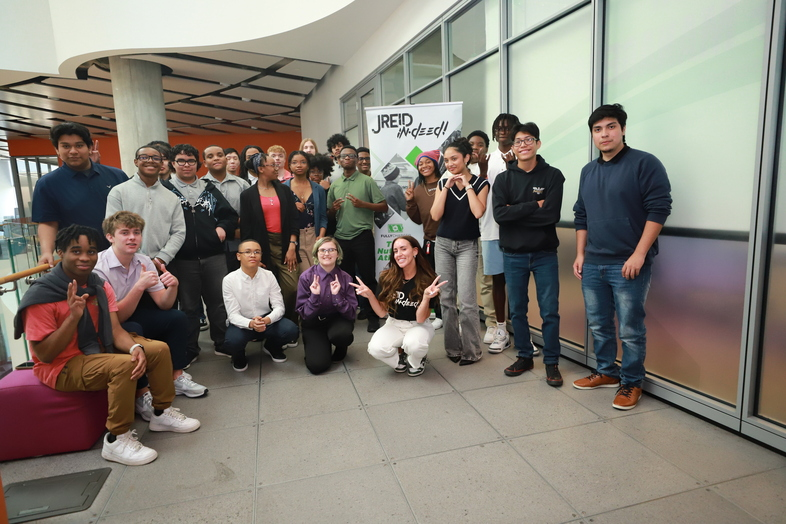

JReid InDeed is a charitable organization founded by Justin Reid that focuses on supporting disadvantaged youth and communities through interactive programs, community engagement, and technology access. The mission of JReid InDeed is to effect change in the world by supporting local communities through tangible difference-making actions.
We were a group of five people who collaberated together to help with the JReid Indeed mission. Our specific team was named The Middle Hearts, and from the start, we knew exactly what we wanted for our project. Our target demographic was specificlly middle schoolers who are at the age they need to learn how to perform CPR. Our goal was to script and record a video about performing CPR. We also created this website from scratch to help you know more about us!
We were one of six different teams, in which everyone scripted a video with a certain target audience in mind and coded a website for that audience as well.
